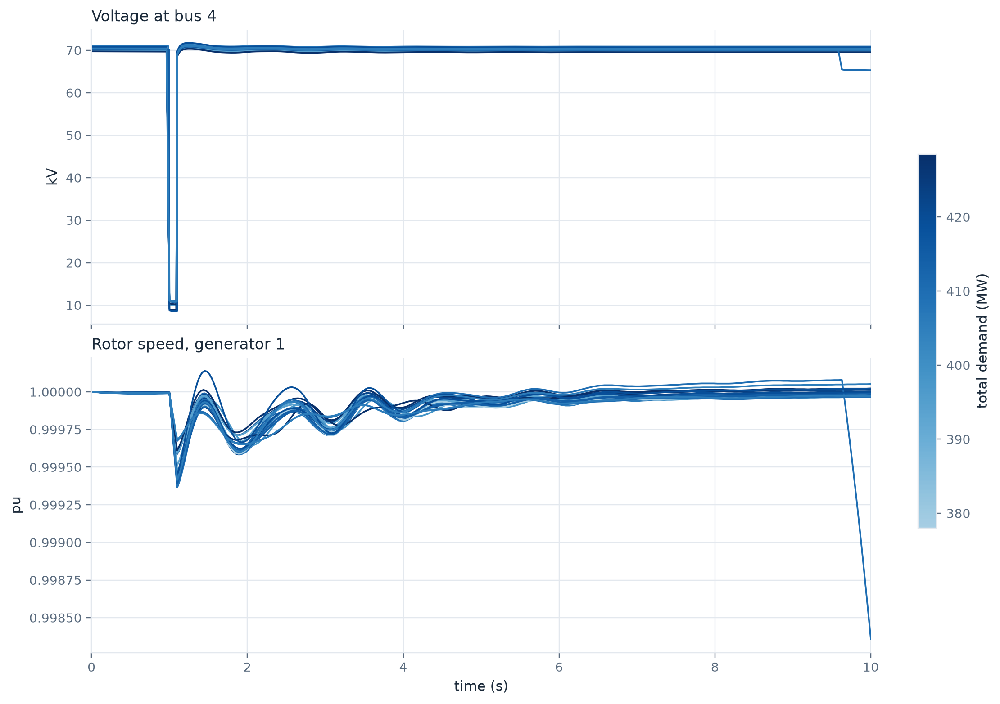
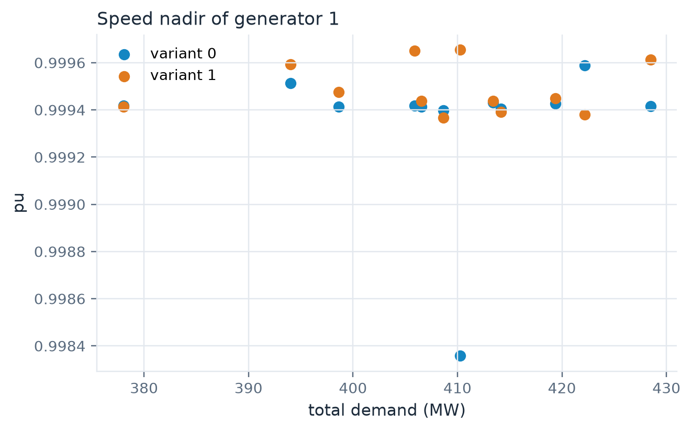

import shutil
from pathlib import Path
import matplotlib.pyplot as plt
import numpy as np
import pandas as pd
import yaml
case = Path("../data/ieee14")
work = Path("outputs/part3")
shutil.rmtree(work, ignore_errors=True)
work.mkdir(parents=True)20 min Part 3 of 4 Dynawo · gridfm-datakit · Zarr
In this part
- Describe a dynamic run with four input tables and a Dynawo parameter file.
- Generate trajectories that start from randomized operating points and topologies.
- Join the Zarr trajectories to their Parquet initial states and shape them for training.
From one trajectory to a dataset
In Part 1 we ran one simulation by hand. GridFM-Datakit runs the same thing in a loop. For each load scenario it solves the optimal power flow, draws topology variants, balances each one with OpenLoadFlow, then hands the balanced network to Dynawo. Every sample carries three keys.
| Key | Varies with | In this part |
|---|---|---|
scenario_index |
the load scenario | random |
perturbation_index |
the topology variant | random, one branch out |
event_index |
the event variant | always 0, the event is fixed |
The disturbance is the same everywhere. What changes is the state the grid is in when it hits.
Four tables describe the dynamics
The case folder holds the network, a Dynawo .par file and four CSV tables. The first one says which dynamic model each element gets.
pd.read_csv(case / "static_element_dynamic_models.csv")| category_name | static_id | parameter_set_id | model_name | |
|---|---|---|---|---|
| 0 | SynchronousGenerator | _GEN____1_SM | Generator1 | GeneratorSynchronousFourWindingsProportionalRe... |
| 1 | SynchronousGenerator | _GEN____2_SM | Generator2 | GeneratorSynchronousFourWindingsProportionalRe... |
| 2 | SynchronousGenerator | _GEN____3_SM | Generator3 | GeneratorSynchronousFourWindingsProportionalRe... |
| 3 | SynchronousGenerator | _GEN____6_SM | Generator6 | GeneratorSynchronousThreeWindingsProportionalR... |
| 4 | SynchronousGenerator | _GEN____8_SM | Generator8 | GeneratorSynchronousThreeWindingsProportionalR... |
| 5 | LoadOneTransformerTapChanger | _LOAD___6_EC | GenericLoadOneTransfo | LoadOneTransformerTapChanger |
| 6 | LoadOneTransformerTapChanger | _LOAD___9_EC | GenericLoadOneTransfo | LoadOneTransformerTapChanger |
Automation systems are models without a static element, here an under-voltage protection on generator 3.
pd.read_csv(case / "automation_systems.csv")| category_name | dynamic_model_id | parameter_set_id | params | model_name | |
|---|---|---|---|---|---|
| 0 | UnderVoltageAutomationSystem | UVA | UnderVoltageAutomatonGenerator3 | generator=_GEN____3_SM; | UnderVoltage |
The events table holds the disturbance. We replace the example’s generator trip by the fault from Part 1, a 100 ms short circuit on bus 4.
events = pd.DataFrame(
[("NodeFault", "_BUS____4_TN", 1.0, "fault_time=0.1;r_pu=0;x_pu=0.01;")],
columns=["event_name", "static_id", "start_time", "params"],
)
events.to_csv(work / "events.csv", index=False)
events| event_name | static_id | start_time | params | |
|---|---|---|---|---|
| 0 | NodeFault | _BUS____4_TN | 1.0 | fault_time=0.1;r_pu=0;x_pu=0.01; |
The variables table says what to record. A Curve is a full time series. We record the voltage of all 14 buses and the speed of the five machines.
bus_ids = [f"_BUS{'_' * (5 - len(str(i)))}{i}_TN" for i in range(1, 15)]
machines = [
"_GEN____1_SM",
"_GEN____2_SM",
"_GEN____3_SM",
"_GEN____6_SM",
"_GEN____8_SM",
]
variables = pd.DataFrame(
[("Curve", b, "U_value") for b in bus_ids]
+ [("Curve", g, "generator_omegaPu_value") for g in machines],
columns=["type", "model_id", "variables"],
)
variables.to_csv(work / "variables.csv", index=False)
variables.tail(6)| type | model_id | variables | |
|---|---|---|---|
| 13 | Curve | _BUS___14_TN | U_value |
| 14 | Curve | _GEN____1_SM | generator_omegaPu_value |
| 15 | Curve | _GEN____2_SM | generator_omegaPu_value |
| 16 | Curve | _GEN____3_SM | generator_omegaPu_value |
| 17 | Curve | _GEN____6_SM | generator_omegaPu_value |
| 18 | Curve | _GEN____8_SM | generator_omegaPu_value |
TipWhere do variable names come from?
Each Dynawo model lists its parameters and variables in <dynawo>/ddb/<model>.desc.xml. The .par file gives the parameter values, one <set id> per model instance.
Randomize the initial state
Two blocks create the diversity. load draws scenarios along a yearly load curve with local noise. topology_perturbation takes one branch out per variant, two variants per scenario. The dynamic block points at the tables and at the Dynawo parameters.
config = yaml.safe_load("""
network:
name: IEEE14
source: file
reader: powsybl
file: ../data/ieee14/IEEE14.iidm
load:
generator: agg_load_profile
agg_profile: default
scenarios: 12
sigma: 0.2
change_reactive_power: true
global_range: 0.4
max_scaling_factor: 4.0
step_size: 0.05
start_scaling_factor: 0.8
topology_perturbation:
type: random
k: 1
n_topology_variants: 2
elements: [branch]
generation_perturbation:
type: none
admittance_perturbation:
type: none
dynamic:
dynamic_solver: dynawo
input_files:
static_element_dynamic_models_file: ../data/ieee14/static_element_dynamic_models.csv
automation_systems_file: ../data/ieee14/automation_systems.csv
events_file: outputs/part3/events.csv
variables_file: outputs/part3/variables.csv
solver_parameters:
start_time: 0.0
stop_time: 10.0
parameters_file: ../data/ieee14/IEEE14.par
network_parameters_file: ../data/ieee14/IEEE14.par
network_parameters_id: Network
solver_type: IDA
solver_parameters_file: ../data/ieee14/IEEE14.par
solver_parameters_id: IDAOrder2
logging:
verbosity: warning
settings:
mode: pf
pf_solver: powsybl
data_dir: outputs/part3/data
num_processes: 4
large_chunk_size: 12
overwrite: true
include_dc_res: false
enable_solver_logs: false
pf_fast: false
dcpf_fast: false
max_iter: 200
seed: 42
""")Generate
A configuration with a dynamic block selects the dynamic pipeline. On the command line, it is the same gridfm_datakit generate config.yaml.
from gridfm_datakit.dynamic.generate_dynamic import generate_dynamic_data
generate_dynamic_data(config)What was written
root = Path("outputs/part3/data/IEEE14/raw/dynamic")
sorted(p.name for p in root.iterdir())['branch_data.parquet',
'bus_data.parquet',
'dynamic_results.zarr',
'events.parquet',
'gen_data.parquet',
'metadata.json',
'reports',
'runtime_data.parquet',
'y_bus_data.parquet']The Parquet tables hold the steady state each simulation started from, in the same schema as Part 2. The Zarr store holds the trajectories, and metadata.json describes its axes. Both carry the three keys.
import json
import zarr
meta = json.loads((root / "metadata.json").read_text())
store = zarr.open(str(root / "dynamic_results.zarr"), mode="r")
bus = pd.read_parquet(root / "bus_data.parquet")
print("curves", store["curves"].shape, "(samples, variables, time steps)")
meta["variable_names"][:3]curves (24, 19, 351) (samples, variables, time steps)['NETWORK__BUS____1_TN_U_value',
'NETWORK__BUS____2_TN_U_value',
'NETWORK__BUS____3_TN_U_value']
WarningJoin on keys, never on position
A failed optimal power flow, power flow or simulation drops its sample, so slice i of the Zarr store is not scenario i. Always match the three keys.
KEYS = ["scenario_index", "perturbation_index", "event_index"]
key_columns = zip(*(np.asarray(store[k]) for k in KEYS), strict=True)
slice_of = {tuple(int(v) for v in key): i for i, key in enumerate(key_columns)}
def curve(key, name):
"""Time and values of one variable for one sample, without the NaN padding."""
i = slice_of[key]
n = meta["timesteps_per_scenario"][i]
j = meta["variable_names"].index(name)
return store["time"][i, :n], store["curves"][i, j, :n]
print(len(slice_of), "samples:", list(slice_of)[:4], "...")24 samples: [(0, 0, 0), (0, 1, 0), (1, 0, 0), (1, 1, 0)] ...Same fault, different responses
Colour each trajectory by the total demand of its initial state.
demand = bus.groupby(KEYS).Pd.sum()
norm = plt.Normalize(demand.min(), demand.max())
cmap = plt.cm.colors.ListedColormap(plt.cm.Blues(np.linspace(0.35, 1, 256)))
fig, (ax_u, ax_w) = plt.subplots(
2, 1, figsize=(10, 7), sharex=True, layout="constrained"
)
for key in slice_of:
color = cmap(norm(demand[key]))
ax_u.plot(*curve(key, "NETWORK__BUS____4_TN_U_value"), color=color, linewidth=1.2)
ax_w.plot(
*curve(key, "_GEN____1_SM_generator_omegaPu_value"), color=color, linewidth=1.2
)
ax_u.set(title="Voltage at bus 4", ylabel="kV")
ax_w.set(title="Rotor speed, generator 1", xlabel="time (s)", ylabel="pu", xlim=(0, 10))
fig.colorbar(
plt.cm.ScalarMappable(norm=norm, cmap=cmap),
ax=[ax_u, ax_w],
label="total demand (MW)",
shrink=0.6,
)
The operating point shapes the response. The topology variants add a second spread on top, since each one changes the paths the power can take, and one of them departs near the end of the window. Rare cases like that one are exactly what a dataset needs to contain.
Shape it for a model
A typical supervised pair is the initial state as input and the trajectory as target. Dynawo’s variable-step solver gives each run its own time grid, so resample onto a common one first.
grid_t = np.linspace(0.0, 10.0, 201)
features = ["Pd", "Qd", "Vm", "Va"]
initial = bus.set_index(KEYS)
X = np.stack([initial.loc[key, features].to_numpy() for key in slice_of])
Y = np.stack(
[
[np.interp(grid_t, *curve(key, name)) for name in meta["variable_names"]]
for key in slice_of
]
)
print("X", X.shape, "(samples, buses, features)")
print("Y", Y.shape, "(samples, curves, time steps)")X (24, 14, 4) (samples, buses, features)
Y (24, 19, 201) (samples, curves, time steps)Your turn
TipExercise · Which samples suffer most?
For every sample, compute the lowest rotor speed of generator 1 during the run. Plot it against the total demand of the initial state, one colour per perturbation_index. Do some topologies stand out?
NoteShow a solution
from helpers import PALETTE
nadir = pd.Series(
{
key: curve(key, "_GEN____1_SM_generator_omegaPu_value")[1].min()
for key in slice_of
}
)
nadir.index.names = KEYS
table = pd.DataFrame({"demand": demand, "nadir": nadir}).dropna().reset_index()
fig, ax = plt.subplots(figsize=(6.5, 3.8))
for p, group in table.groupby("perturbation_index"):
ax.scatter(group.demand, group.nadir, s=36, color=PALETTE[p], label=f"variant {p}")
ax.set(title="Speed nadir of generator 1", xlabel="total demand (MW)", ylabel="pu")
ax.legend();
NoteNext
Part 4 draws the disturbance itself at random, with its type, place, time and severity.